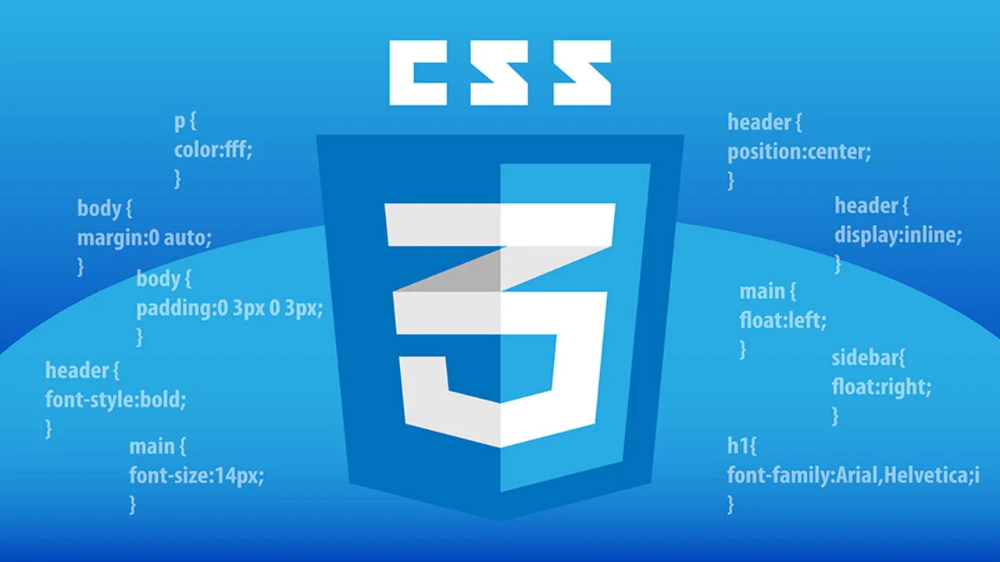

Najważniejsze jednostki w CSS
Jednostki długości
- px - piksele (stała jednostka)
- em - wielokrotność rozmiaru czcionki elementu nadrzędnego
- rem - wielokrotność rozmiaru czcionki elementu root (
html)
- % - procent względny względem elementu rodzica
- vw - procent szerokości okna widoku (viewport width)
- vh - procent wysokości okna widoku (viewport height)

Inne jednostki
- fr - ułamkowa część w grid layout
- deg - stopnie w transformacjach i animacjach (np. obrót)
- s - sekundy (czas w animacjach i przejściach)
Przykład strony o jednostkach CSS